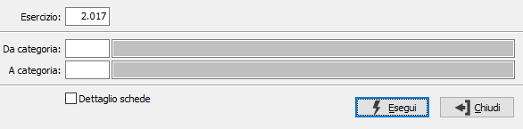

Controllo cespiti/contabilità
Il programma effettua un controllo tra i valori dei cespiti ed i valori riportati in contabilità.

ESERCIZIO: inserire l'esercizio per cui effettuare il controllo.
DA CATEGORIA: indicare il codice della categoria gestionale dal quale si desidera iniziare l’elaborazione. Sul campo sono attive le funzioni di ricerca (F9).
A CATEGORIA: indicare il codice della categoria gestionale alla quale si desidera terminare la stampa. Sul campo sono attive le funzioni di ricerca (F9).
DETTAGLIO SCHEDE: definisce se riportare anche il dettaglio delle schede cespiti (casella con segno di spunta) oppure solo i valori delle categorie selezionate (casella vuota).